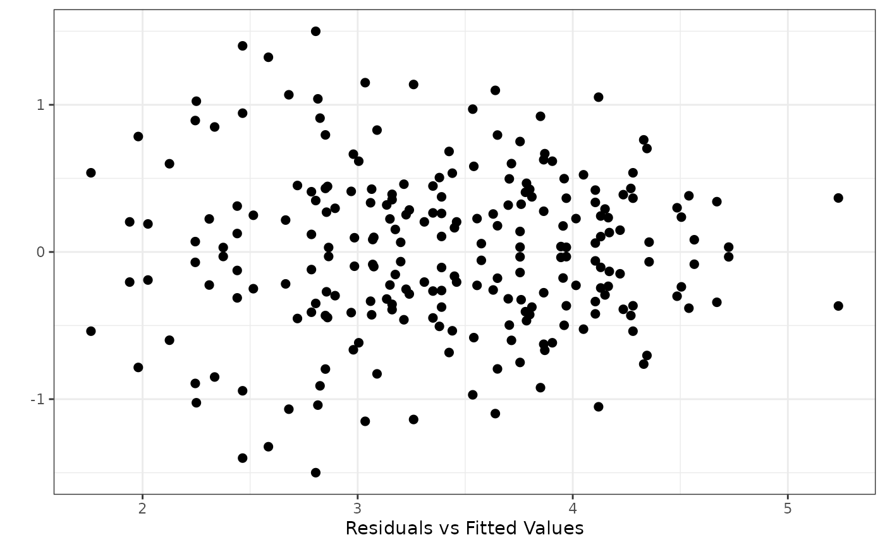

Exam8.1 presents the Diameter at breast height (Dbh) of 60 SeedLots under layout of row column design with 6 rows and 10 columns in 18 countries and 59 provinces of 18 selected countries.
Williams, E.R., Matheson, A.C. and Harwood, C.E. (2002).Experimental Design and Analysis for Tree Improvement. CSIRO Publishing.
DataExam8.1
data(DataExam8.1) library(tidyverse) library(ggplot2) fm8.4 <- aov(formula = Dbh ~ Inoc+Replication+Error(Replication/Inoc)+Inoc*Country*Province ,data = DataExam8.1 #, subset #, weights #, na.action , method = "qr" , model = TRUE , x = FALSE , y = FALSE , qr = TRUE , singular.ok = TRUE , contrasts = NULL )#> Warning: Error() model is singularsummary(fm8.4)#> #> Error: Replication #> Df Sum Sq Mean Sq #> Inoc 1 11.50 11.50 #> Replication 2 2.04 1.02 #> #> Error: Within #> Df Sum Sq Mean Sq F value Pr(>F) #> Country 17 54.65 3.215 5.312 1.54e-08 *** #> Province 41 18.65 0.455 0.752 0.851 #> Inoc:Country 17 10.03 0.590 0.975 0.491 #> Inoc:Province 41 21.42 0.522 0.863 0.699 #> Residuals 116 70.20 0.605 #> --- #> Signif. codes: 0 ‘***’ 0.001 ‘**’ 0.01 ‘*’ 0.05 ‘.’ 0.1 ‘ ’ 1#> # A tibble: 2 x 2 #> Inoc Mean #> <fct> <dbl> #> 1 1 3.18 #> 2 2 3.62#> # A tibble: 18 x 2 #> Country Mean #> <fct> <dbl> #> 1 Australia 2.63 #> 2 Benin 3.34 #> 3 China 3.69 #> 4 Egypt 2.50 #> 5 Fiji 2.61 #> 6 Guam 2.34 #> 7 India 3.57 #> 8 Kenya 3.49 #> 9 Malaysia 4.03 #> 10 Mauritius 3.12 #> 11 PNG 3.65 #> 12 Philippines 3.61 #> 13 Puerto Rico 3.34 #> 14 Solomon IS 3.70 #> 15 Sri Lanks 3.24 #> 16 Thailand 3.84 #> 17 Vanuatu 2.76 #> 18 Vietnam 3.28#> # A tibble: 59 x 3 #> # Groups: Country [?] #> Country Province Mean #> <fct> <fct> <dbl> #> 1 Australia 1 1.85 #> 2 Australia 2 3.24 #> 3 Australia 3 2.94 #> 4 Australia 4 2.50 #> 5 Benin 5 3.34 #> 6 China 6 3.38 #> 7 China 7 3.98 #> 8 China 63 3.70 #> 9 Egypt 8 2.64 #> 10 Egypt 10 2.46 #> # ... with 49 more rowslibrary(dae) RESFit<-data.frame(fittedvalue=fitted.aovlist(fm8.4),residualvalue=proj(fm8.4)$Within[,"Residuals"]) library(ggplot2) ggplot(RESFit,aes(x=fittedvalue,y=residualvalue))+ geom_point(size=2)+ labs(x="Residuals vs Fitted Values", y="")+ theme_bw()fm8.6 <- aov(formula = Dbh ~ Inoc+Replication+Column+Replication/Row+Replication/Column+Province+Inoc/Province ,data = DataExam8.1 #, subset #, weights #, na.action , method = "qr" , model = TRUE , x = FALSE , y = FALSE , qr = TRUE , singular.ok = TRUE , contrasts = NULL ) summary(fm8.6)#> Df Sum Sq Mean Sq F value Pr(>F) #> Inoc 1 11.50 11.497 47.597 3.72e-09 *** #> Replication 2 2.04 1.020 4.222 0.01924 * #> Column 9 65.26 7.251 30.017 < 2e-16 *** #> Province 58 63.67 1.098 4.545 1.29e-08 *** #> Replication:Row 20 12.19 0.609 2.523 0.00304 ** #> Replication:Column 27 10.68 0.396 1.638 0.05714 . #> Inoc:Province 58 8.65 0.149 0.617 0.96648 #> Residuals 60 14.49 0.242 #> --- #> Signif. codes: 0 ‘***’ 0.001 ‘**’ 0.01 ‘*’ 0.05 ‘.’ 0.1 ‘ ’ 1